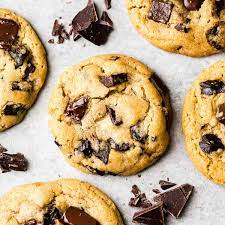

Chocolate Chip Cookies Recipe

Description
Learn how to make classic chocolate chip cookies and enjoy them still warm from the oven. Perfect for a bake sale or with your afternoon tea.
Ingredients
- 120 g butter, softened
- 75 g light brown sugar
- 75 g golden caster sugar
- 1 medium egg
- 1 tsp vanilla extract
- 180 g plain flour
- ½ tsp bicarbonate of soda
- 150 g dark chocolate, cut into chunks
Recipe
- Preheat oven: Set to 180C/160C fan/gas 4 and line two baking sheets with parchment.
- Cream : Cream the butter and sugars together until very light and fluffy, then beat in the egg and vanilla. Once combined, stir in the flour, bicarb, chocolate and ¼ tsp salt.
- Portion: Scoop 10 large tbsps of the mixture onto the trays, leaving enough space between each to allow for spreading.
- Cook: Bake for 10-12 mins or until firm at the edges but still soft in the middle – they will harden a little as they cool.
- Cool: Leave to cool on the tray for a few mins before eating warm, or transfer to a wire rack to cool completely.
- Enjoy: Eat while still warm or enjoy them anytime in the next three days, store in an airtight container.
Home